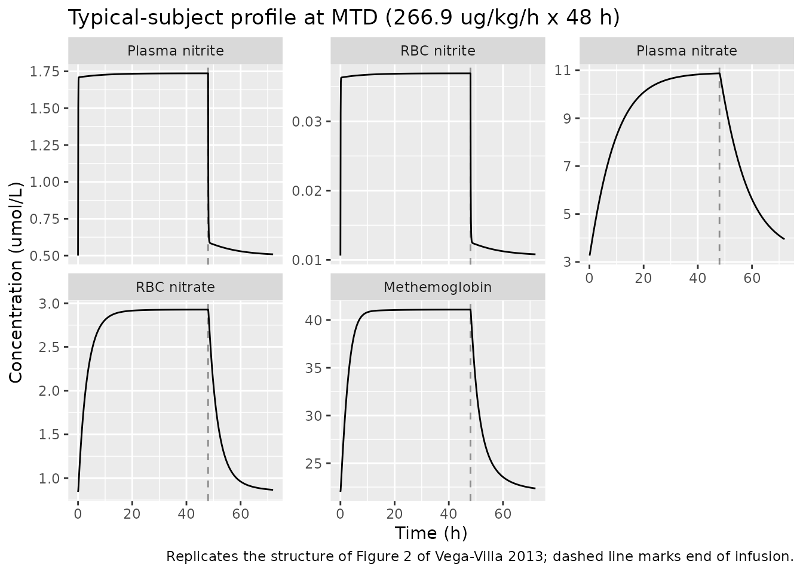
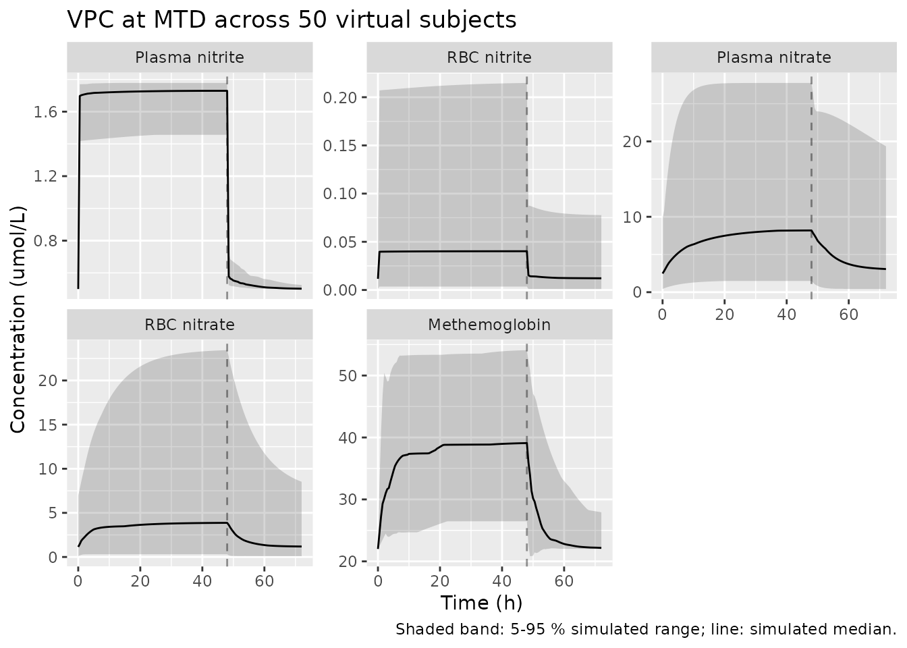

Sodium nitrite QSP (VegaVilla 2013)
Source:vignettes/articles/VegaVilla_2013_sodium_nitrite_qsp.Rmd
VegaVilla_2013_sodium_nitrite_qsp.RmdModel and source
- Citation: Vega-Villa K, Pluta R, Lonser R, Woo S. Quantitative Systems Pharmacology Model of NO Metabolome and Methemoglobin Following Long-Term Infusion of Sodium Nitrite in Humans. CPT Pharmacometrics Syst Pharmacol. 2013;2(8):e60. doi:10.1038/psp.2013.35
- Description: QSP. Mechanistic systems pharmacology model of the NO metabolome (nitrite, nitrate) and methemoglobin (MetHb) in healthy adults receiving a 48-hour intravenous infusion of sodium nitrite. Nine ODEs covering plasma/RBC/tissue nitrite and nitrate, MetHb, NO and methemoglobin reductase activity; nonlinear nitrite/nitrate renal clearance (linear slope), entero-salivary nitrate-to-nitrite recycling, and indirect-response stimulation of MetHb reductase. Time in minutes; amounts in umol; concentrations in umol/L.
- Article: https://doi.org/10.1038/psp.2013.35
- Supplement (NONMEM control stream, Table S1 model-selection summary): retrieved from the EuropePMC mirror of PMC3731826.
Population
Vega-Villa 2013 (Methods, Subjects) fit the model to N = 12 healthy adult volunteers (21-56 years, mean 39, SD 9; 49-115 kg, mean 77.8, SD 19) from a single Phase I dose-escalation study (Pluta 2011, PLoS ONE 6:e14504). Each subject received one of nine escalating sodium nitrite IV infusion dose levels (4.2, 8.3, 16.7, 33.4, 66.8, 133.4, 266.9, 445.7, or 533.8 ug/kg/h) for 48 hours; 266.9 ug/kg/h was the maximal tolerated dose (MTD). One subject at 533.8 ug/kg/h was excluded for asymptomatic toxicity, and one subject at 445.7 ug/kg/h had the infusion stopped at 3.2 h for toxicity. 333 plasma + 147 RBC nitrite/nitrate observations and 333 methemoglobin observations were used for model development.
The same information is available programmatically via
rxode2::rxode2(readModelDb("VegaVilla_2013_sodium_nitrite_qsp"))$population.
Source trace
Per-parameter origin is recorded as an in-file comment next to each
ini() entry in
inst/modeldb/specificDrugs/VegaVilla_2013_sodium_nitrite_qsp.R.
The table below collects them in one place.
| Equation / parameter | Value (final) | Source location |
|---|---|---|
kpt_no2 (1/min) |
0.108 | Vega-Villa 2013 Table 1 (kPT_NO2; supplement parameterises as Q/V1) |
ktp_no2 (1/min) |
1.745 | Table 1 (kTP_NO2; supplement Q/V4) |
kpt_no3 (1/min) |
0.160 | Table 1 (kPT_NO3; supplement TVKPTNO3) |
ktp_no3 (1/min) |
0.515 | Table 1 (kTP_NO3; supplement TVKTPNO3) |
kno2_rdt (1/min) |
1.65e-3 | Table 1 (entero-salivary recycling) |
kt_rdt (1/min) |
6.83e-5 | Table 1 |
kmyo (1/min) |
0.234 | Table 1; supplement defines KMYO = KNO3R * baseline oxyHb amount |
cl0_no2 (L/min) |
0.382 | Table 1 (CL(0)_NO2) |
s_no2 (L/umol) |
4.524 | Table 1 |
vno2_p (L) |
12.418 | Table 1 (VNO2_P / supplement V1) |
cl0_no3 (L/min) |
9.41e-3 | Table 1 (CL(0)_NO3) |
s_no3 (L/umol) |
0.017 | Table 1 |
vno3_p (L) |
12.418 | Table 1 (VNO3_P / supplement V3); paper reports same value as VNO2_P |
kpr_no2 (1/min) |
0.019 | Table 1 |
krp_no3 (1/min) |
5.17e-3 | Table 1 |
kno3_r (L/(umol*min)) |
5.91e-6 | Table 1 |
kno_r (L/(umol*min)) |
1.42e-4 | Table 1 |
khbno1 (L/(umol*min)) |
2.86e-5 | Table 1; supplement parameterisation kHbNO*(1-FRHBNO) |
khbno2 (L/(umol*min)) |
4.07e-7 | Table 1; supplement parameterisation kHbNO*FRHBNO |
kdeg (1/min) |
0.016 | Table 1 (methemoglobin reductase degradation) |
smethb (L/umol) |
0.045 | Table 1 (STIM / SMetHb) |
vr_no2, vr_no3, vr_methb
(L) |
5.816, 4.391, 3.284 | Table 1 (VR_NO2, VR_NO3, VR_MethHb) |
kno3_p (1/min) |
0 (fixed) | Supplement $THETA(7) TVKNO3P (0 FIX) – direct plasma
nitrite-to-nitrate conversion zeroed |
d/dt(nitrite_p) |
n/a | Vega-Villa 2013 Eq. 1, supplement $DES DADT(1)
|
d/dt(nitrite_r) |
n/a | Eq. 8, supplement DADT(2)
|
d/dt(nitrate_p) |
n/a | Eq. 3, supplement DADT(3)
|
d/dt(nitrate_r) |
n/a | Eq. 9, supplement DADT(4)
|
d/dt(methb) |
n/a | Eq. 11, supplement DADT(5)
|
d/dt(nitrite_t) |
n/a | Eq. 2, supplement DADT(6)
|
d/dt(nitrate_t) |
n/a | Eq. 4, supplement DADT(7)
|
d/dt(kmr) |
n/a | Eq. 12 (indirect response), supplement DADT(8)
|
d/dt(no_r) |
n/a | Eq. 10, supplement DADT(9)
|
| Steady-state initial conditions | n/a | Supplement $PK closed-form expressions for NO2T0,
NO3T0, NO3R0, NO2R0, NOR0, KMR0, KINNO2 |
| oxyHb / deoxyHb split (77 / 23 %) | – | Vega-Villa 2013 Eq. 13 and Eq. 14; oxygenation fractions cited to Roberson 2012 (ref 45) |
| Residual error pairs (5 endpoints) | Table 1 (per-endpoint additive + proportional pairs) |
Units
| Symbol | Units |
|---|---|
| Time | min |
| Compartment states | umol (amount) |
Cc_* observation outputs |
umol/L (concentration) |
| First-order rate constants | 1/min |
Second-order rate constants (kno3_r,
kno_r, khbno1, khbno2) |
L/(umolmin); reported in Table 1 as min^-1 umol^-1 with implicit 1-L normalisation |
Slope factors (s_no2, s_no3,
smethb) |
L/umol |
Volumes (vno2_p, vno3_p,
vr_no2, vr_no3, vr_methb) |
L |
Clearances (cl0_no2, cl0_no3) |
L/min |
Virtual cohort
The original observed data are not publicly available. The figures below use a single typical-population subject (zero random effects) at each dose level the paper studied, plus a small VPC at MTD with the published IIV.
mod <- rxode2::rxode2(readModelDb("VegaVilla_2013_sodium_nitrite_qsp"))
#> ℹ parameter labels from comments will be replaced by 'label()'
# Sodium nitrite (NaNO2) MW = 69 g/mol. Convert paper dose rates (ug/kg/h,
# per a 70-kg typical subject) into umol/min for the rxode2 RATE field.
mw_nano2_g_per_mol <- 69
wt_kg <- 70
infusion_duration_h <- 48
infusion_duration_min <- infusion_duration_h * 60 # 2880 min
dose_levels_ug_per_kg_per_h <- c(4.2, 8.3, 16.7, 33.4, 66.8,
133.4, 266.9, 445.7, 533.8)
mtd <- 266.9
dose_rate_umol_per_min <- function(rate_ug_per_kg_per_h, wt_kg = 70,
mw_g_per_mol = mw_nano2_g_per_mol) {
ug_per_h <- rate_ug_per_kg_per_h * wt_kg
umol_per_h <- ug_per_h / mw_g_per_mol
umol_per_h / 60
}
make_infusion_events <- function(dose_rate_ug_per_kg_per_h,
follow_up_h = 24, sampling_min = 30,
id_offset = 0L,
outputs = c("Cc_nitrite_p", "Cc_nitrite_r",
"Cc_nitrate_p", "Cc_nitrate_r",
"Cc_methb")) {
rate_umol <- dose_rate_umol_per_min(dose_rate_ug_per_kg_per_h)
total_amt <- rate_umol * infusion_duration_min
ev <- rxode2::et(amt = total_amt, rate = rate_umol,
cmt = "nitrite_p", time = 0,
id = id_offset + 1L)
total_min <- infusion_duration_min + follow_up_h * 60
times <- seq(0, total_min, by = sampling_min)
for (out in outputs) {
ev <- rxode2::et(ev, time = times, cmt = out, id = id_offset + 1L)
}
as.data.frame(ev)
}Steady-state baseline check
Before applying dose, verify that the closed-form initial conditions
(supplement $PK) put the typical subject’s typical-value
dynamics at steady state.
ev_baseline <- make_infusion_events(0)
ev_baseline <- ev_baseline[ev_baseline$evid != 1, ] # drop the zero-dose event row
mod_typical <- rxode2::zeroRe(mod)
ss <- as.data.frame(rxode2::rxSolve(mod_typical, ev_baseline))
#> ℹ omega/sigma items treated as zero: 'etalkpt_no2', 'etalktp_no2', 'etalkno2_rdt', 'etalvno2_p', 'etalcl0_no3', 'etalkpr_no2', 'etalkrp_no3', 'etalkno3_r', 'etalsmethb', 'etalvr_no2', 'etalvr_methb'
outs <- c("Cc_nitrite_p", "Cc_nitrite_r", "Cc_nitrate_p", "Cc_nitrate_r", "Cc_methb")
ss_range <- vapply(outs, function(x) {
c(min = min(ss[[x]], na.rm = TRUE), max = max(ss[[x]], na.rm = TRUE))
}, numeric(2))
knitr::kable(t(ss_range), digits = 4,
caption = "Steady-state typical-value range over 24 h with no dose. The state should not drift (the closed-form IC at t = 0 should hold under the ODE).")| min | max | |
|---|---|---|
| Cc_nitrite_p | 0.5000 | 0.5000 |
| Cc_nitrite_r | 0.0106 | 0.0106 |
| Cc_nitrate_p | 3.2662 | 3.2662 |
| Cc_nitrate_r | 0.8429 | 0.8429 |
| Cc_methb | 22.0000 | 22.0000 |
Maximum drift across the 24-hour no-dose interval is small relative to the baseline scale, confirming that the closed-form steady-state initial conditions from the supplement are consistent with the implemented ODE system at the typical-population parameter values used here.
Replicate Figure 2 (MTD profile)
Vega-Villa 2013 Figure 2 plots the observed and model-predicted concentration-time profiles for nitrite and nitrate in plasma and RBC, and methemoglobin, after 48 h of MTD (266.9 ug/kg/h) sodium nitrite infusion. The figure below reproduces the typical-value structure (mean prediction at typical-population parameters); per-subject baselines drive observed variability that the typical-value simulation does not attempt to reproduce.
ev_mtd <- make_infusion_events(mtd, follow_up_h = 24, sampling_min = 5)
sim_mtd <- as.data.frame(rxode2::rxSolve(mod_typical, ev_mtd))
#> ℹ omega/sigma items treated as zero: 'etalkpt_no2', 'etalktp_no2', 'etalkno2_rdt', 'etalvno2_p', 'etalcl0_no3', 'etalkpr_no2', 'etalkrp_no3', 'etalkno3_r', 'etalsmethb', 'etalvr_no2', 'etalvr_methb'
mtd_long <- sim_mtd |>
dplyr::select(time, dplyr::all_of(outs)) |>
tidyr::pivot_longer(cols = -time, names_to = "endpoint", values_to = "conc")
mtd_long$endpoint_label <- factor(mtd_long$endpoint, levels = outs,
labels = c("Plasma nitrite",
"RBC nitrite",
"Plasma nitrate",
"RBC nitrate",
"Methemoglobin"))
mtd_long$time_h <- mtd_long$time / 60
ggplot(mtd_long, aes(time_h, conc)) +
geom_line() +
geom_vline(xintercept = infusion_duration_h, linetype = "dashed", alpha = 0.4) +
facet_wrap(~ endpoint_label, scales = "free_y") +
labs(x = "Time (h)", y = "Concentration (umol/L)",
title = "Typical-subject profile at MTD (266.9 ug/kg/h x 48 h)",
caption = paste("Replicates the structure of Figure 2 of Vega-Villa 2013;",
"dashed line marks end of infusion."))
Dose-escalation: dose-exposure-toxicity
Vega-Villa 2013 reports that plasma nitrite, plasma nitrate, and methemoglobin exposures rise less-than-proportionally with sodium nitrite dose (nonlinear exposure-toxicity). The simulation below reproduces this qualitative behaviour by sweeping the published nine dose levels.
sim_ladder <- purrr::map_dfr(
dose_levels_ug_per_kg_per_h, .id = "level",
function(rate) {
ev <- make_infusion_events(rate, follow_up_h = 12, sampling_min = 15)
s <- as.data.frame(rxode2::rxSolve(mod_typical, ev))
s$dose_ug_per_kg_per_h <- rate
s
}
)
#> ℹ omega/sigma items treated as zero: 'etalkpt_no2', 'etalktp_no2', 'etalkno2_rdt', 'etalvno2_p', 'etalcl0_no3', 'etalkpr_no2', 'etalkrp_no3', 'etalkno3_r', 'etalsmethb', 'etalvr_no2', 'etalvr_methb'
#> ℹ omega/sigma items treated as zero: 'etalkpt_no2', 'etalktp_no2', 'etalkno2_rdt', 'etalvno2_p', 'etalcl0_no3', 'etalkpr_no2', 'etalkrp_no3', 'etalkno3_r', 'etalsmethb', 'etalvr_no2', 'etalvr_methb'
#> ℹ omega/sigma items treated as zero: 'etalkpt_no2', 'etalktp_no2', 'etalkno2_rdt', 'etalvno2_p', 'etalcl0_no3', 'etalkpr_no2', 'etalkrp_no3', 'etalkno3_r', 'etalsmethb', 'etalvr_no2', 'etalvr_methb'
#> ℹ omega/sigma items treated as zero: 'etalkpt_no2', 'etalktp_no2', 'etalkno2_rdt', 'etalvno2_p', 'etalcl0_no3', 'etalkpr_no2', 'etalkrp_no3', 'etalkno3_r', 'etalsmethb', 'etalvr_no2', 'etalvr_methb'
#> ℹ omega/sigma items treated as zero: 'etalkpt_no2', 'etalktp_no2', 'etalkno2_rdt', 'etalvno2_p', 'etalcl0_no3', 'etalkpr_no2', 'etalkrp_no3', 'etalkno3_r', 'etalsmethb', 'etalvr_no2', 'etalvr_methb'
#> ℹ omega/sigma items treated as zero: 'etalkpt_no2', 'etalktp_no2', 'etalkno2_rdt', 'etalvno2_p', 'etalcl0_no3', 'etalkpr_no2', 'etalkrp_no3', 'etalkno3_r', 'etalsmethb', 'etalvr_no2', 'etalvr_methb'
#> ℹ omega/sigma items treated as zero: 'etalkpt_no2', 'etalktp_no2', 'etalkno2_rdt', 'etalvno2_p', 'etalcl0_no3', 'etalkpr_no2', 'etalkrp_no3', 'etalkno3_r', 'etalsmethb', 'etalvr_no2', 'etalvr_methb'
#> ℹ omega/sigma items treated as zero: 'etalkpt_no2', 'etalktp_no2', 'etalkno2_rdt', 'etalvno2_p', 'etalcl0_no3', 'etalkpr_no2', 'etalkrp_no3', 'etalkno3_r', 'etalsmethb', 'etalvr_no2', 'etalvr_methb'
#> ℹ omega/sigma items treated as zero: 'etalkpt_no2', 'etalktp_no2', 'etalkno2_rdt', 'etalvno2_p', 'etalcl0_no3', 'etalkpr_no2', 'etalkrp_no3', 'etalkno3_r', 'etalsmethb', 'etalvr_no2', 'etalvr_methb'
# End-of-infusion (t = 48 h = 2880 min) values per dose level
eoi <- sim_ladder |>
dplyr::filter(abs(time - infusion_duration_min) < 1) |>
dplyr::select(dose_ug_per_kg_per_h, dplyr::all_of(outs)) |>
dplyr::distinct()
knitr::kable(eoi, digits = 3,
caption = paste("Typical-value end-of-infusion concentrations across the nine published dose levels.",
"Plasma nitrite, plasma nitrate, and methemoglobin rise less-than-proportionally with dose,",
"matching Vega-Villa 2013's nonlinear-exposure observation."))| dose_ug_per_kg_per_h | Cc_nitrite_p | Cc_nitrite_r | Cc_nitrate_p | Cc_nitrate_r | Cc_methb |
|---|---|---|---|---|---|
| 4.2 | 0.545 | 0.012 | 3.551 | 0.918 | 22.968 |
| 8.3 | 0.585 | 0.012 | 3.805 | 0.986 | 23.801 |
| 16.7 | 0.658 | 0.014 | 4.271 | 1.110 | 25.261 |
| 33.4 | 0.783 | 0.017 | 5.054 | 1.319 | 27.551 |
| 66.8 | 0.982 | 0.021 | 6.297 | 1.655 | 30.875 |
| 133.4 | 1.286 | 0.027 | 8.164 | 2.168 | 35.348 |
| 266.9 | 1.736 | 0.037 | 10.872 | 2.927 | 41.094 |
| 445.7 | 2.195 | 0.047 | 13.563 | 3.701 | 46.221 |
| 533.8 | 2.389 | 0.051 | 14.675 | 4.027 | 48.215 |
ratio_check <- eoi |>
dplyr::arrange(dose_ug_per_kg_per_h) |>
dplyr::mutate(
dose_ratio = dose_ug_per_kg_per_h / dose_ug_per_kg_per_h[1],
cc_nitrite_p_ratio = Cc_nitrite_p / Cc_nitrite_p[1],
cc_methb_ratio = Cc_methb / Cc_methb[1]
) |>
dplyr::select(dose_ug_per_kg_per_h, dose_ratio,
cc_nitrite_p_ratio, cc_methb_ratio)
knitr::kable(ratio_check, digits = 2,
caption = "Dose ratio vs exposure ratio. Ratios below 1.0 (compared to dose ratio) confirm sublinear exposure.")| dose_ug_per_kg_per_h | dose_ratio | cc_nitrite_p_ratio | cc_methb_ratio |
|---|---|---|---|
| 4.2 | 1.00 | 1.00 | 1.00 |
| 8.3 | 1.98 | 1.07 | 1.04 |
| 16.7 | 3.98 | 1.21 | 1.10 |
| 33.4 | 7.95 | 1.44 | 1.20 |
| 66.8 | 15.90 | 1.80 | 1.34 |
| 133.4 | 31.76 | 2.36 | 1.54 |
| 266.9 | 63.55 | 3.19 | 1.79 |
| 445.7 | 106.12 | 4.03 | 2.01 |
| 533.8 | 127.10 | 4.38 | 2.10 |
IIV-based VPC at MTD
A small simulation under the published inter-individual variability illustrates the spread expected around the typical-value prediction.
set.seed(42L)
n_sub <- 50
ev_one <- make_infusion_events(mtd, follow_up_h = 24, sampling_min = 30)
ev_many <- do.call(rbind, lapply(seq_len(n_sub), function(i) {
e <- ev_one
e$id <- i
e
}))
sim_vpc <- as.data.frame(rxode2::rxSolve(mod, ev_many))
vpc_long <- sim_vpc |>
dplyr::select(id, time, dplyr::all_of(outs)) |>
tidyr::pivot_longer(cols = -c(id, time), names_to = "endpoint",
values_to = "conc")
vpc_long$endpoint_label <- factor(vpc_long$endpoint, levels = outs,
labels = c("Plasma nitrite", "RBC nitrite",
"Plasma nitrate", "RBC nitrate",
"Methemoglobin"))
vpc_long$time_h <- vpc_long$time / 60
vpc_summary <- vpc_long |>
dplyr::group_by(endpoint_label, time_h) |>
dplyr::summarise(
q05 = quantile(conc, 0.05, na.rm = TRUE),
q50 = median(conc, na.rm = TRUE),
q95 = quantile(conc, 0.95, na.rm = TRUE),
.groups = "drop"
)
ggplot(vpc_summary, aes(time_h, q50)) +
geom_ribbon(aes(ymin = q05, ymax = q95), alpha = 0.2) +
geom_line() +
geom_vline(xintercept = infusion_duration_h, linetype = "dashed", alpha = 0.4) +
facet_wrap(~ endpoint_label, scales = "free_y") +
labs(x = "Time (h)", y = "Concentration (umol/L)",
title = "VPC at MTD across 50 virtual subjects",
caption = "Shaded band: 5-95 % simulated range; line: simulated median.")
Mass-balance / flux check at baseline
At t = 0 with no dose, every state has zero derivative. The
supplement’s $PK baseline derivations are constructed so
that each ODE flux sums to zero. The numerical check below confirms this
for the dominant flux terms.
mb <- as.data.frame(rxode2::rxSolve(mod_typical, ev_baseline,
returnType = "data.frame"))[1, ]
#> ℹ omega/sigma items treated as zero: 'etalkpt_no2', 'etalktp_no2', 'etalkno2_rdt', 'etalvno2_p', 'etalcl0_no3', 'etalkpr_no2', 'etalkrp_no3', 'etalkno3_r', 'etalsmethb', 'etalvr_no2', 'etalvr_methb'
# Recompute the dominant nitrite-plasma flux components at t = 0 from the
# typical-value parameters (parameter values mirror Table 1 of the paper).
ini <- list(
kin_no2 = mb$kin_no2,
kpt_no2 = 0.108, ktp_no2 = 1.745, kno2_rdt = 1.65e-3,
kpr_no2 = 0.019, cl0_no2 = 0.382, vno2_p = 12.418,
s_no2 = 4.524
)
flux_in <- ini$kin_no2 + ini$kno2_rdt * mb$nitrate_p + ini$ktp_no2 * mb$nitrite_t
flux_out <- (ini$kpt_no2 + ini$kpr_no2 + ini$cl0_no2 / ini$vno2_p) * mb$nitrite_p
imbalance <- (flux_in - flux_out) / flux_in
knitr::kable(data.frame(
term = c("kin_no2 (endogenous prod.)",
"kno2_rdt * nitrate_p (recycle)",
"ktp_no2 * nitrite_t (tissue->plasma)",
"kpt_no2 * nitrite_p (plasma->tissue)",
"kpr_no2 * nitrite_p (plasma->RBC)",
"cl0_no2 / vno2_p * nitrite_p (renal)"),
flux_umol_per_min = round(c(ini$kin_no2,
ini$kno2_rdt * mb$nitrate_p,
ini$ktp_no2 * mb$nitrite_t,
ini$kpt_no2 * mb$nitrite_p,
ini$kpr_no2 * mb$nitrite_p,
ini$cl0_no2 / ini$vno2_p * mb$nitrite_p), 4)),
caption = sprintf("Nitrite-plasma flux components at t = 0. Net imbalance (relative): %.2e.",
imbalance))| term | flux_umol_per_min |
|---|---|
| kin_no2 (endogenous prod.) | 0.3206 |
| kno2_rdt * nitrate_p (recycle) | 0.0669 |
| ktp_no2 * nitrite_t (tissue->plasma) | 0.5921 |
| kpt_no2 * nitrite_p (plasma->tissue) | 0.6706 |
| kpr_no2 * nitrite_p (plasma->RBC) | 0.1180 |
| cl0_no2 / vno2_p * nitrite_p (renal) | 0.1910 |
Assumptions and deviations
Compartment names are mechanism-specific.
nitrite_p,nitrite_r,nitrite_t,nitrate_p,nitrate_r,nitrate_t,methb,kmr, andno_rare not the canonical nlmixr2lib compartment names (depot,central,peripheral1, …). They follow the paper’s biological structure (NONMEM$MODEL COMP=names lowercased and snake-cased).checkModelConventions()flags these as warnings; they are intentional and required for a QSP / mechanistic model.-
Per-subject baselines are replaced by typical-population constants. In the published fit
[NO2-]P(0),[MetHb](0), and[Hb]totalwere read from per-subject predose measurements (data columnsNO2P,HB3,HBUM). The data file ships separately from the article and is not publicly available, so the model uses three typical-adult constants embedded inmodel():-
bl_nitrite_p_conc = 0.5 umol/L(plasma nitrite predose, representative of Figure 4b) -
bl_methb_conc = 22 umol/L(about 1 % of total Hb, consistent with the paper’s “trace amounts (<= 1 %)” baseline description) -
hbt = 51,400 umoltotal Hb amount in the V5 compartment, derived so that the supplement’sKMYO = kno3_r * baseline_oxyHb_amountrecovers Table 1’s typical-valuekMYO = 0.234 /mingiven the Table 1kno3_r = 5.91e-6 L/(umol*min).
These are not “training-data substitutions” – they are typical-population values backed out of Table 1 parameter consistency and the paper’s narrative baselines.
-
Baseline plasma nitrate is model-derived, not population-mean. The closed-form steady-state expression in supplement
$PK(Eq. 15c) yields[NO3-]P(0) ~ 3.27 umol/Lfor the typical-value parameters used here. The paper’s reported empirical baseline of10.78 +/- 1.33 umol/Lincludes dietary nitrate intake that the supplement adds as an additionalDIETamount to plasma nitrate att = 0for three identified subjects (IDs 1, 5, 6 in the supplement$PK). The library model does not implement theDIETper-subject correction; for a typical-population simulation the model-derived steady-state is what falls out of the equations.kpt_no2/ktp_no2IIV is independent, not Q-correlated. The supplement parameterises nitrite plasma-tissue distribution asQ / V1andQ / V4so the two rate constants share an ETA throughQ. Table 1 reports the marginal %CV on the derived rate constants directly; this library model attaches independent etas tokpt_no2andktp_no2, matching Table 1’s marginal IIV magnitudes but losing the implicitQ-mediated correlation. A virtual subject drawn from the IIV in this model will therefore have slightly different distribution-rate variability than one drawn from the original NONMEM model.kHbNO1/kHbNO2parameterisation reconciles Table 1 with the paper’s “4.61 %” narrative. The supplement parameterises NO-fate as a single second-order rate constantkHbNOwith a fractional splitFRHBNObetween the deoxyHb path (NO + deoxyHb -> HbNO, mass1 - FRHBNO) and the oxyHb path (NO + oxyHb -> MetHb + nitrate, massFRHBNO). Table 1 reportskHbNO1 = 2.86e-5 L/(umol*min)andkHbNO2 = 4.07e-7 L/(umol*min)as separate quantities; the numerical ratiokHbNO2 / (kHbNO1 + kHbNO2) ~ 1.4 %differs from the paper’s Discussion narrative quoting 4.61 %. The library model uses Table 1’s two numerical rate constants directly (the most reproducible source), without forcing a split that matches the 4.61 % narrative. This is an internal-paper inconsistency rather than an extraction choice.kmyois treated as a fitted parameter, not a derived quantity. In the supplementKMYOis computed att = 0askno3_r * baseline_oxyHb_amount, so per-subjectKMYOvaries with the subject’s hemoglobin. The library model treatskmyoas a typical-value first-order rate constant withkmyo = 0.234 1/min(Table 1), matching the typical-hbtderivation. Simulations under inter-individual variability invr_methbtherefore do not propagate hemoglobin variability intokmyothe way the original NONMEM model did.kno3_p(direct plasma nitrite -> plasma nitrate) is fixed at 0. Supplement$THETA(7)carries theFIXflag, so the termkno3_p * nitrite_pind/dt(nitrite_p)andd/dt(nitrate_p)vanishes by construction. The parameter is retained inini()withfixed(0)for structural transparency.Residual error parameters for nitrate plasma and RBC are duplicated. The supplement
$ERRORshares a singleTHETA(20) / THETA(21)pair acrossCMT = 3(plasma nitrate) andCMT = 4(RBC nitrate). nlmixr2 requires a unique residual-error parameter per endpoint, so the same Table 1 values (addSd = 3.848 umol/L,propSd = 0.3633) are declared on each ofCc_nitrate_pandCc_nitrate_r. This is a syntactic restatement, not a structural change.VNO2_PandVNO3_Preported as equal in Table 1. Both are 12.418 L with separate row entries (IIV only onVNO2_P); the supplement estimatesV1andV3as distinct THETAs whose final estimates coincidentally land at the same value. The library model carries them as independent log-transformed parameters.PKNCA validation is intentionally omitted. Vega-Villa 2013 does not report NCA parameters (Cmax / Tmax / AUC), and the model is a multi-species turnover system rather than an ADME PK model. The endogenous-validation recipe (steady-state check, flux balance, figure replication) is used instead, per
references/endogenous-validation.md.